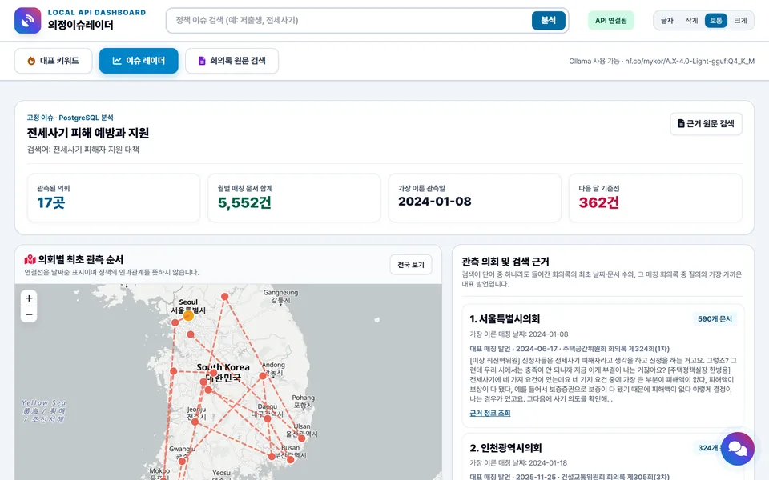

01
대표 프로젝트
국회도서관 주관 2026 DATA·AI 분석 경진대회 출품작
의정이슈레이더Council Issue Radar
2024–2025년 전국 17개 광역의회 회의록을 분석해, 정책 이슈가 어느 의회에서 처음 나왔고 다른 의회로 어떻게 이어졌는지 시간순으로 보여주고 다음 달 논의량을 예측하는 시스템입니다. 회의록은 외부 AI API로 보내지 않고 모든 모델을 로컬에서 실행합니다.
3.97ms조건 벡터 검색 중앙값 (ChromaDB 대비 약 148배)
F1 0.881다음 달 논의 지속 예측
MAE 7.12건포아송 회귀 언급량 예측
0건외부 AI API 호출
- 205만 발언 → 90만 검색 청크: 의회마다 다른 HTML을 로컬 LLM으로 규칙화하고, 검색용 자식(약 750자)·답변용 부모(약 2,400자) 청크로 분리해 PostgreSQL 17 + pgvector에 적재
- 하이브리드 검색: 의미 검색과 BM25를 RRF로 합친 뒤 BGE 재순위 모델로 정렬, 유사 발언을 Union-Find로 묶어 이슈 타임라인 생성
- 직접 비교해서 결정: 벡터 DB, 메타데이터 결합 여부, 한국어 로컬 LLM 6종을 같은 조건에서 측정하고 근거 인용률·미끼 질문 대응으로 A.X-4.0-Light 선택
- PostgreSQL + pgvector
- BM25 · RRF
- BGE Reranker
- Snowflake Arctic
- Poisson Regression
- Ollama
- FastAPI